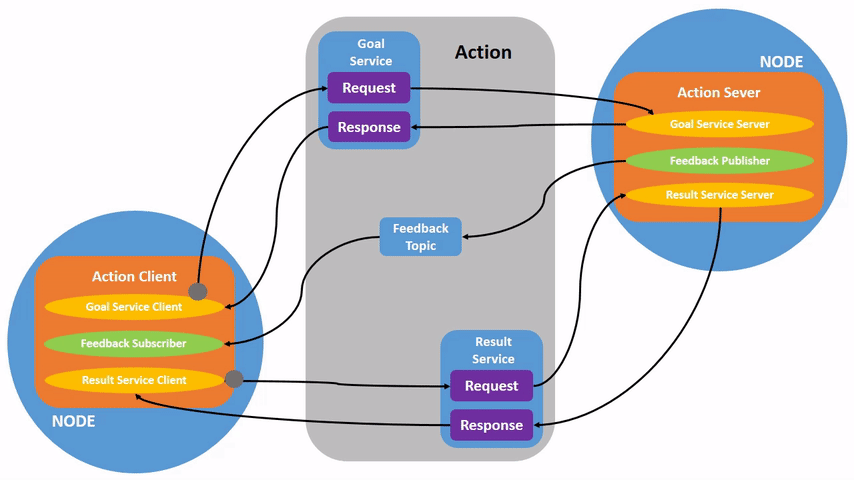

Comprendre les actions
Objectif : Introspectez les actions dans ROS 2.
Niveau du tutoriel : Débutant
Durée : 15 minutes
Contenu
Arrière-plan
Les actions sont l’un des types de communication dans ROS 2 et sont destinées aux tâches de longue durée. Ils se composent de trois parties : un objectif, des commentaires et un résultat.
Les actions sont construites sur des thèmes et des services. Leur fonctionnalité est similaire à celle des services, sauf que les actions peuvent être annulées. Ils fournissent également une rétroaction constante, contrairement aux services qui renvoient une seule réponse.
Les actions utilisent un modèle client-serveur, similaire au modèle éditeur-abonné (décrit dans le tutoriel topics). Un nœud « client d’action » envoie un objectif à un nœud « serveur d’action » qui reconnaît l’objectif et renvoie un flux de commentaires et un résultat.
Conditions préalables
Ce didacticiel s’appuie sur des concepts, tels que nodes et topics, couvert dans les tutoriels précédents.
Ce didacticiel utilise le package turtlesim.
Comme toujours, n’oubliez pas de sourcer ROS 2 dans chaque nouveau terminal que vous ouvrez.
Tâches
1 Configuration
Démarrez les deux nœuds turtlesim, /turtlesim et /teleop_turtle.
Ouvrez un nouveau terminal et exécutez :
ros2 run turtlesim turtlesim_node
Ouvrez un autre terminal et exécutez :
ros2 run turtlesim turtle_teleop_key
2 Actions d’utilisation
Lorsque vous lancerez le nœud /teleop_turtle, vous verrez le message suivant dans votre terminal :
Use arrow keys to move the turtle.
Use G|B|V|C|D|E|R|T keys to rotate to absolute orientations. 'F' to cancel a rotation.
Concentrons-nous sur la deuxième ligne, qui correspond à une action. (La première instruction correspond à la rubrique « cmd_vel », abordée précédemment dans le tutoriel topics.)
Notez que les touches alphabétiques G|B|V|C|D|E|R|T forment une « boîte » autour de la touche F sur un clavier QWERTY américain (si vous n’utilisez pas un clavier QWERTY clavier, voir ce lien pour suivre). La position de chaque touche autour de F correspond à cette orientation dans turtlesim. Par exemple, le E fera pivoter l’orientation de la tortue vers le coin supérieur gauche.
{kind=link}
Faites attention au terminal sur lequel le nœud /turtlesim est exécuté. Chaque fois que vous appuyez sur l’une de ces touches, vous envoyez un objectif à un serveur d’action qui fait partie du nœud /turtlesim. Le but est de faire pivoter la tortue pour faire face à une direction particulière. Un message relayant le résultat de l’objectif devrait s’afficher une fois que la tortue a terminé sa rotation :
[INFO] [turtlesim]: Rotation goal completed successfully
La touche F annulera un objectif en cours d’exécution.
Essayez d’appuyer sur la touche C, puis appuyez sur la touche F avant que la tortue puisse terminer sa rotation. Dans le terminal où le nœud /turtlesim est en cours d’exécution, vous verrez le message :
[INFO] [turtlesim]: Rotation goal canceled
Non seulement le côté client (votre entrée dans le teleop) peut arrêter un objectif, mais le côté serveur (le nœud /turtlesim) le peut également. Lorsque le côté serveur choisit d’arrêter de traiter un objectif, on dit qu’il « interrompt » l’objectif.
Essayez d’appuyer sur la touche D, puis sur la touche G avant que la première rotation puisse se terminer. Dans le terminal où le nœud /turtlesim est en cours d’exécution, vous verrez le message :
[WARN] [turtlesim]: Rotation goal received before a previous goal finished. Aborting previous goal
Ce serveur d’action a choisi d’abandonner le premier objectif car il en a obtenu un nouveau. Il aurait pu choisir autre chose, comme rejeter le nouveau but ou exécuter le deuxième but après la fin du premier. Ne présumez pas que chaque serveur d’action choisira d’abandonner l’objectif actuel lorsqu’il en obtiendra un nouveau.
3 infos nœud ros2
Pour voir les actions du nœud /turtlesim, ouvrez un nouveau terminal et exécutez la commande :
ros2 node info /turtlesim
Ce qui renverra une liste des abonnés, éditeurs, services, serveurs d’action et clients d’action de /turtlesim :
/turtlesim
Subscribers:
/parameter_events: rcl_interfaces/msg/ParameterEvent
/turtle1/cmd_vel: geometry_msgs/msg/Twist
Publishers:
/parameter_events: rcl_interfaces/msg/ParameterEvent
/rosout: rcl_interfaces/msg/Log
/turtle1/color_sensor: turtlesim/msg/Color
/turtle1/pose: turtlesim/msg/Pose
Service Servers:
/clear: std_srvs/srv/Empty
/kill: turtlesim/srv/Kill
/reset: std_srvs/srv/Empty
/spawn: turtlesim/srv/Spawn
/turtle1/set_pen: turtlesim/srv/SetPen
/turtle1/teleport_absolute: turtlesim/srv/TeleportAbsolute
/turtle1/teleport_relative: turtlesim/srv/TeleportRelative
/turtlesim/describe_parameters: rcl_interfaces/srv/DescribeParameters
/turtlesim/get_parameter_types: rcl_interfaces/srv/GetParameterTypes
/turtlesim/get_parameters: rcl_interfaces/srv/GetParameters
/turtlesim/list_parameters: rcl_interfaces/srv/ListParameters
/turtlesim/set_parameters: rcl_interfaces/srv/SetParameters
/turtlesim/set_parameters_atomically: rcl_interfaces/srv/SetParametersAtomically
Service Clients:
Action Servers:
/turtle1/rotate_absolute: turtlesim/action/RotateAbsolute
Action Clients:
Notez que l’action /turtle1/rotate_absolute pour /turtlesim se trouve sous Action Servers. Cela signifie que /turtlesim répond et fournit des commentaires pour l’action /turtle1/rotate_absolute.
Le nœud /teleop_turtle porte le nom /turtle1/rotate_absolute sous Action Clients, ce qui signifie qu’il envoie des objectifs pour ce nom d’action.
ros2 node info /teleop_turtle
Qui reviendra :
/teleop_turtle
Subscribers:
/parameter_events: rcl_interfaces/msg/ParameterEvent
Publishers:
/parameter_events: rcl_interfaces/msg/ParameterEvent
/rosout: rcl_interfaces/msg/Log
/turtle1/cmd_vel: geometry_msgs/msg/Twist
Service Servers:
/teleop_turtle/describe_parameters: rcl_interfaces/srv/DescribeParameters
/teleop_turtle/get_parameter_types: rcl_interfaces/srv/GetParameterTypes
/teleop_turtle/get_parameters: rcl_interfaces/srv/GetParameters
/teleop_turtle/list_parameters: rcl_interfaces/srv/ListParameters
/teleop_turtle/set_parameters: rcl_interfaces/srv/SetParameters
/teleop_turtle/set_parameters_atomically: rcl_interfaces/srv/SetParametersAtomically
Service Clients:
Action Servers:
Action Clients:
/turtle1/rotate_absolute: turtlesim/action/RotateAbsolute
4 liste d’actions ros2
Pour identifier toutes les actions dans le graphe ROS, exécutez la commande :
ros2 action list
Qui reviendra :
/turtle1/rotate_absolute
C’est la seule action dans le graphique ROS en ce moment. Il contrôle la rotation de la tortue, comme vous l’avez vu précédemment. Vous savez également déjà qu’il existe un client d’action (partie de /teleop_turtle) et un serveur d’action (partie de /turtlesim) pour cette action en utilisant le ros2 node info <node_name> commande.
4.1 liste d’actions ros2 -t
Les actions ont des types, similaires aux rubriques et aux services. Pour trouver le type de /turtle1/rotate_absolute, exécutez la commande :
ros2 action list -t
Qui reviendra :
/turtle1/rotate_absolute [turtlesim/action/RotateAbsolute]
Entre parenthèses à droite de chaque nom d’action (dans ce cas uniquement /turtle1/rotate_absolute) se trouve le type d’action, turtlesim/action/RotateAbsolute. Vous en aurez besoin lorsque vous souhaitez exécuter une action à partir de la ligne de commande ou du code.
5 informations d’action ros2
Vous pouvez examiner plus en détail l’action /turtle1/rotate_absolute avec la commande :
ros2 action info /turtle1/rotate_absolute
Qui reviendra
Action: /turtle1/rotate_absolute
Action clients: 1
/teleop_turtle
Action servers: 1
/turtlesim
Cela nous indique ce que nous avons appris plus tôt en exécutant ros2 node info sur chaque nœud : le nœud /teleop_turtle a un client d’action et le nœud /turtlesim a un serveur d’action pour le / action tortue1/rotate_absolute.
6 spectacle d’interface ros2
Une autre information dont vous aurez besoin avant d’envoyer ou d’exécuter vous-même un objectif d’action est la structure du type d’action.
Rappelez-vous que vous avez identifié le type de /turtle1/rotate_absolute lors de l’exécution de la commande ros2 action list -t. Entrez la commande suivante avec le type d’action dans votre terminal :
ros2 interface show turtlesim/action/RotateAbsolute
Qui reviendra :
# The desired heading in radians
float32 theta
---
# The angular displacement in radians to the starting position
float32 delta
---
# The remaining rotation in radians
float32 remaining
La première section de ce message, au-dessus du ---, est la structure (type de données et nom) de la demande d’objectif. La section suivante est la structure du résultat. La dernière section est la structure de la rétroaction.
7 ros2 action send_goal
Envoyons maintenant un objectif d’action depuis la ligne de commande avec la syntaxe suivante :
ros2 action send_goal <action_name> <action_type> <values>
<values> doit être au format YAML.
Gardez un œil sur la fenêtre de turtlesim et saisissez la commande suivante dans votre terminal :
ros2 action send_goal /turtle1/rotate_absolute turtlesim/action/RotateAbsolute "{theta: 1.57}"
Vous devriez voir la tortue tourner, ainsi que le message suivant dans votre terminal :
Waiting for an action server to become available...
Sending goal:
theta: 1.57
Goal accepted with ID: f8db8f44410849eaa93d3feb747dd444
Result:
delta: -1.568000316619873
Goal finished with status: SUCCEEDED
Tous les objectifs ont un identifiant unique, indiqué dans le message de retour. Vous pouvez également voir le résultat, un champ avec le nom delta, qui est le déplacement vers la position de départ.
Pour voir les commentaires de cet objectif, ajoutez --feedback à la commande ros2 action send_goal :
ros2 action send_goal /turtle1/rotate_absolute turtlesim/action/RotateAbsolute "{theta: -1.57}" --feedback
Votre terminal renverra le message :
Sending goal:
theta: -1.57
Goal accepted with ID: e6092c831f994afda92f0086f220da27
Feedback:
remaining: -3.1268222332000732
Feedback:
remaining: -3.1108222007751465
…
Result:
delta: 3.1200008392333984
Goal finished with status: SUCCEEDED
Vous continuerez à recevoir des commentaires, les radians restants, jusqu’à ce que l’objectif soit atteint.
Résumé
Les actions sont comme des services qui vous permettent d’exécuter des tâches longues, de fournir des commentaires réguliers et qui peuvent être annulées.
Un système de robot utiliserait probablement des actions pour la navigation. Un objectif d’action pourrait dire à un robot de se déplacer vers une position. Pendant que le robot navigue vers la position, il peut envoyer des mises à jour en cours de route (c’est-à-dire des commentaires), puis un message de résultat final une fois qu’il a atteint sa destination.
Turtlesim dispose d’un serveur d’action auquel les clients d’action peuvent envoyer des objectifs pour la rotation des tortues. Dans ce didacticiel, vous avez introspecté cette action, /turtle1/rotate_absolute, pour avoir une meilleure idée de ce que sont les actions et de leur fonctionnement.
Prochaines étapes
Vous avez maintenant couvert tous les concepts de base de ROS 2. Les derniers tutoriels de l’ensemble « Utilisateurs » vous présenteront quelques outils et techniques qui faciliteront l’utilisation de ROS 2, en commençant par Utilisation de rqt_console pour afficher les journaux.